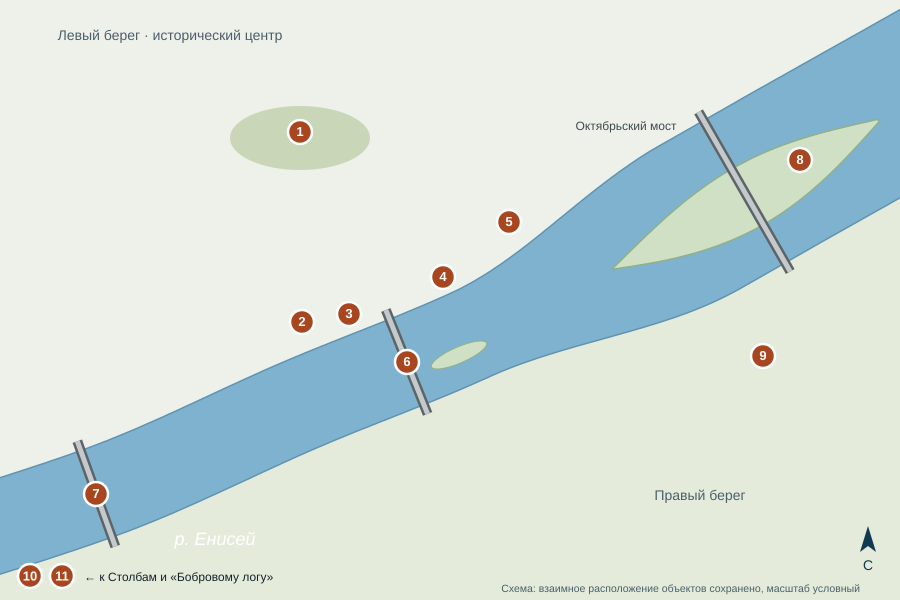
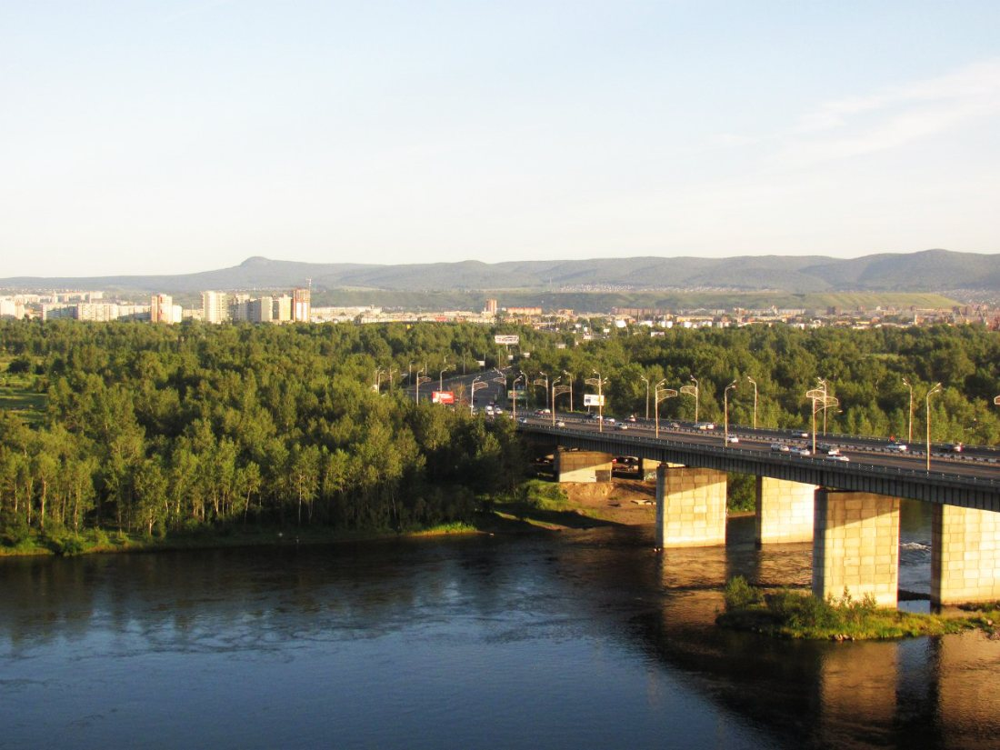
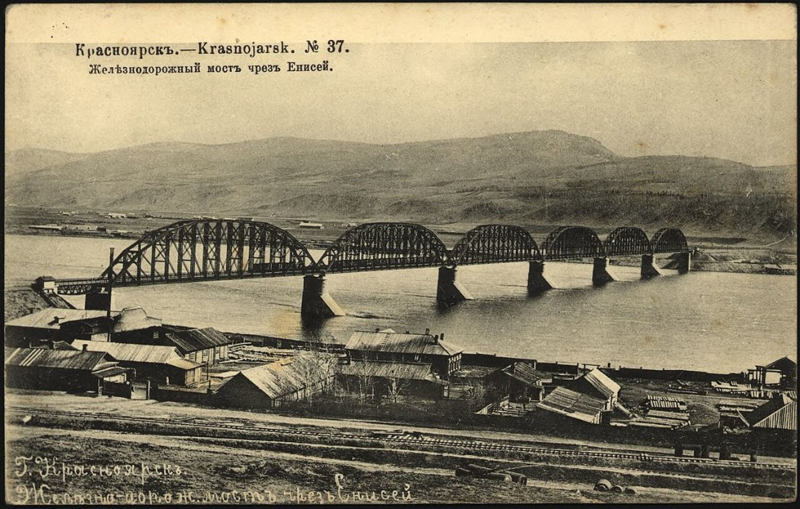
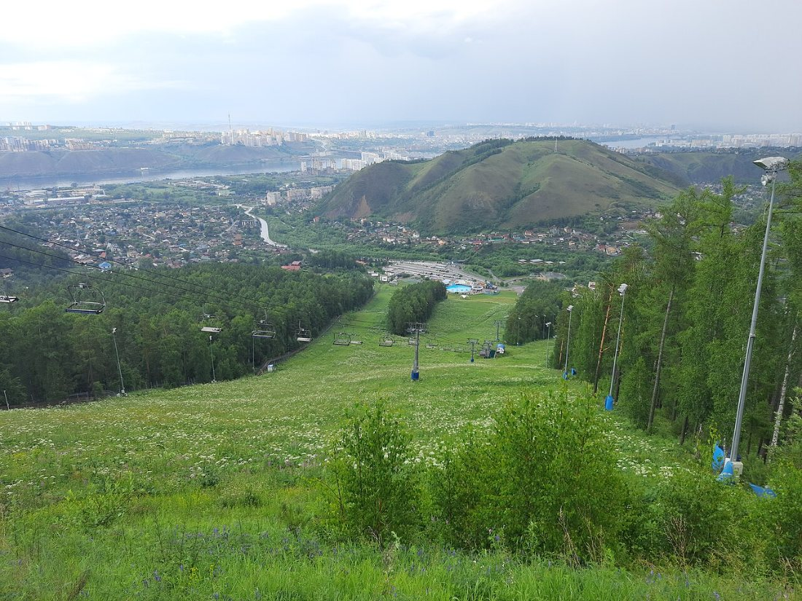

Основные достопримечательности Красноярска
На схеме ниже отмечены главные достопримечательности города. Нажмите на любую точку — и вы перейдёте к её описанию на этой странице.

Номера на схеме соответствуют списку ниже. Точки стоят по реальным координатам объектов, береговая линия упрощена. Нажмите на номер или на название в списке.
Обозначения на схеме
- Часовня Параскевы Пятницы
- Театр оперы и балета
- Краеведческий музей
- Набережная Енисея
- Музейный центр «Площадь Мира»
- Коммунальный мост
- Железнодорожный мост 1899 года
- Остров Татышев
- Театр юного зрителя
- Красноярские Столбы (за пределами схемы)
- Фанпарк «Бобровый лог» (за пределами схемы)
Красноярские Столбы

Заповедник «Столбы» основан в 1925 году по просьбе жителей Красноярска, чтобы сохранить знаменитые скалы. Он начинается прямо на юго-западной окраине города, на правом берегу Енисея, на отрогах Восточного Саяна.
Столбы — это огромные скалы из сиенита высотой в десятки метров, стоящие среди тайги. У многих есть свои имена: «Дед», «Перья», «Львиные ворота». Скалолазание без страховки на Столбах называют «столбизмом» — это давняя красноярская традиция.
Часовня Параскевы Пятницы

Часовня стоит на вершине Караульной горы и построена в 1855 году. В древности на этом месте была сторожевая вышка: с неё следили за подходом врагов к острогу, отсюда и название горы.
Часовня — один из главных символов Красноярска: вместе с Коммунальным мостом она изображена на 10-рублёвой банкноте. От часовни открывается панорама всего города и Енисея.
Коммунальный мост

Коммунальный мост — автодорожный железобетонный арочный мост через Енисей. Он был открыт в 1961 году и соединяет Центральный район на левом берегу со Свердловским на правом.
Длина моста — более двух километров. Он стал вторым символом города на 10-рублёвой купюре.
Краеведческий музей

Красноярский краевой краеведческий музей основан в 1889 году и является одним из старейших музеев Сибири. Его здание на набережной Енисея построено в необычном «египетском» стиле: фасад украшают колонны и рельефы, напоминающие древний храм.
В экспозиции — археология, природа края и история освоения Сибири.
Театр оперы и балета

Красноярский государственный театр оперы и балета основан в 1976 году, первый спектакль на его сцене показали в 1978 году. С 2018 года театр носит имя оперного певца-красноярца Дмитрия Хворостовского.
Рядом с театром стоит колонна со скульптурой — одна из заметных точек на городской набережной.
Набережная Енисея

Набережная Енисея — любимое место прогулок горожан. Отсюда видны мосты, острова и горы правого берега.
Ниже Красноярской ГЭС вода в Енисее остаётся тёплой, поэтому в городе река зимой не замерзает: над ней поднимается морозный туман.
Остров Татышев

Татышев — самый крупный остров на Енисее в черте города, площадью около 7 км². Попасть на него можно по Октябрьскому и пешеходному Виноградовскому мостам.
На острове — велосипедные и пешеходные дорожки, спортивные площадки и парк, а летом здесь проходят городские праздники.
Железнодорожный мост 1899 года

Железнодорожный мост через Енисей построили в 1896–1899 годах для Транссибирской магистрали по проекту инженера Лавра Проскурякова. Его пролёты были одними из самых длинных в России того времени.
Модель моста показали на Всемирной выставке в Париже в 1900 году, где проект получил высокую награду. Старый мост прослужил больше ста лет, а сегодня по соседству работают новые железнодорожные мосты.
Фанпарк «Бобровый лог»

«Бобровый лог» — горнолыжный комплекс и парк отдыха на южной окраине города, рядом с заповедником «Столбы». Он открыт в 2006 году.
Зимой здесь катаются на лыжах и сноубордах, летом работают канатная дорога и аттракционы. В 2019 году комплекс принимал соревнования зимней Универсиады.